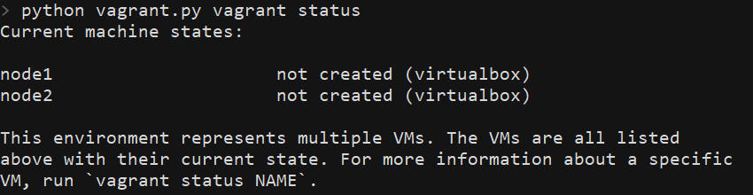
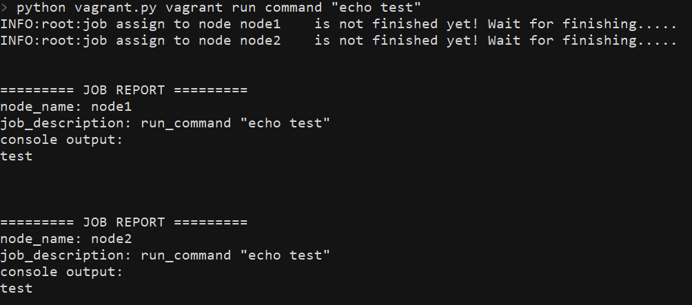
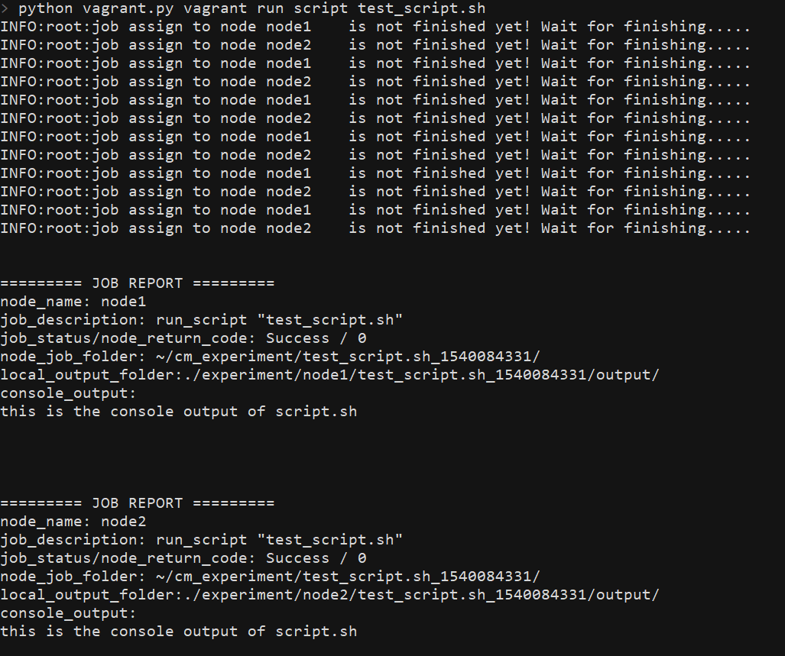

18. ehvagrant: enhanced Vagrant interface with importable python module¶
[TOC]
18.3.1. Introduction¶
Vagrant is a open-source software that
help you to build and manage virtual machines through command line
interface. ehvagrantprovide you an enhanced command line Vagrant
interface that enable users to utilize Vagrant functionalities in an
earlier way.
In essence, ehvagrant just a Python script. However, thanks to the
“entry_points” functionality supported by
setuptools, we can easily use
this script as if it is a “real” command line application.
The major enhancement of ehvagrant is that it enables you to execute
the same job on multiple Vagrant instances at the same time,
including:
- transfer file and folder between host machine and instances
- execute command or script on instances.
This allows you to test a program on multiple virtual machines, which may have different OS and working environment, at the same time, by just issuing a single command.
18.2. Setup Walkthrough¶
18.2.1. Requirement summary¶
Minimum requirements to useehvagrantare the following:
- Python 3 and
pipshould be available on the host machine. A working - Vagrant software work with appropriate
- virtualization provider.
scp - functionality should be available on the host machine. Currently,
ehvagrantjust support the virtual machine that are running an- Unix-like OS, such as Ubuntu.
18.2.2. Setup ehvagrant¶
Just pip install ehvagrant.
IMPORTANT: if you are usingehvagrant alongcloudmesh, You don’t
have to install ehvagrant separately from cloudmesh.
18.2.3. Install vagrant¶
You can download Vagrant from
here. It supports all
mainstream operating system, including Windows, Mac OS, and various
Linux distribution. After finishing installation, you can check if the
installation success by executing vagrant version. You should see
something like below.

18.2.4. Install virtualization provider¶
Although Vagrant help you with managing virtual machines, Vagrant itself does not handle the task of virtualization. Vagrant rely on virtualization software or even cloud service provider to do the actual work of virtualization – running virtual machine on top of host machine, provisioning computational and storage resources to virtual machines, communicating between host and virtual machine….etc. In other word, to leverage Vagrant functionality, you need to install Vagrant along with virtualization provider and/or the correspondent t Vagrant plugin that enables Vagrant to interact with virtualization provider.
The default virtualization provider of Vagrant is VirtualBox. You don’t have to install any plugin to let Vagrant working with VirtualBox. However, you indeed need to install VirtualBox if it don’t exist on your host computer. In this case please refer to VirtualBox downloand page. Also, please note that using VirtualBox as the virtualization provider implies virtual machines will run on your host machine. So make sure there are sufficient resources on your host machine.
You may choose other virtualization provider. In this case, please setup virtualization provider of your choice and follow the Vagrant user manual to setup Vagrant with correspondent plugin. If there is no special need that you have to address, we strongly recommend you just go with VirtualBox.
18.2.5. Configure Vagrantfile¶
Vagrantfile is the main configuration file of Vagrant. Vagrant will
only interact with the virtual machines defined in the Vagrantfile.
To utilized ehvagrant, Vagrantfile should be stored
atVAGRANTFILE_PATHwhich default path is ~/ehvagrant/Vagrantfile.
If you have defined environment variable EHVAGRANT_HOME , default
VAGRANTFILE_PATH becomes $EHVAGRANT_HOME/Vagrantfile .
IMPORTANT: If you are using ehvagrant with cloudmesh, then your
VAGRANTFILE_PATH will be changed to
~/.cloudmesh/vagrant_workspace/Vagrantfile.
ehvagrant will try to locate Vagrantfile every time it invokes. If
it can’t find it, ehvagrant will generate a default Vagrantfileat
default path. Default Vagrantfile defines two Ubuntu machine called
node1 and node2, powered by VirtualBox.
You can use vagrant create functionality to
easily setup a Vagrantfile which defines any amount of virtual
machine as you want. Moreover, you can also try to customize your own
Vagrantfile. Please refer to
Vagrant user manual to
see how to do that. Don’t forget that currently ehvagrant just
supports Unix-like OS, and after finishing your modification on
Vagrantfile, save it at VAGRANTFILE_PATH.
The following walkthrough assumes you go with the generated default
Vagrantfile.
18.2.6. Initialize virtual machine¶
After finishing Vagrantfiledefinition, you are now ready to deploy
and run your virtual machine with Vagrant. But first, let us check
current status of your Vagrant provider. Execute ehvagrant lsat
ehvagrant root directory, you will see:

Then execute ehvagrant start. Since your machines are not deployed
yet, Vagrant will first deploy your machines and then bring them up,
and automatically do LOTS of setting. When Vagrant has done its work,
we can confirm this by issuing ehvagrant ls again. You will see now:

HOO-WA! Your two virtual machines are painlessly deployed, configured,
up and running! Now you are ready to do some fancy work with Vagrant
and ehvagrant.
18.2.7. Micellouenes: setup scp on host machine¶
Since these topics are not directly relate to ehvagrant, here I just
describe how do you check these functionally are working properly.
For scp, open terminal and execute scp, you should see a short
usage guide shows on your screen. If it is not there, please install
scp and make sure its executive file is in your PATH environment
variable.

18.2.8. Using ehvagrant with cloudmesh¶
ehvagrant was originally developed as a module of cloudmesh. If
you get ehvagrant with cloudmesh distribution, do following change
when setup ehvagrant with cloudmesh:
- You DO NOT have to install
ehvagrantseparately fromcloudmesh. - When
cloudmeshsets up, it automatically installsehvagrant. - Your
VAGRANTFILE_PATHnow change to `~/.cloudmesh/vagrant - _space/Vagrantfile`.
18.3. Usage¶
18.3.1. Introduction¶
18.3.1.1. Which instances will be affected by my command?¶
Commands will only affect the instances that belongs to current
Vagrant environment, which is defined by the Vagrantfile locates at
VAGRNANTFILE_PATH. Instances are identified by its name.
18.3.1.2. How to specify instances I want to work with?¶
Use--vms=<vmList> option to specify which instances you want to work
with. Your <vmList> string will be parsed by
python-hostlist
package. Here are some example how your <vmList> string will be
parsed:
>>> hostlist.expand_hostlist('a,b,c') # --vms=a,b,c
['a', 'b', 'c']
>>> hostlist.expand_hostlist('node[1-5]') # --vms=node[1-5]
['node1', 'node2', 'node3', 'node4', 'node5']
Most of commands can work without --vms. But Be careful, issuing a
command without specifying instances will usually affect all of
the instances that are available in the current vagrant environment.
18.3.1.3. Before Start¶
Before transferring file and folder between host and instances or running commands and scripts on instances, you must make sure that all of the instances you want to work with are up, running, and reachable through network.
18.3.2. Manage instances¶
18.3.2.1. create instances¶
Usage: python vagrant.py vagrant create --vms=<vmList> [--image=IMAGE] [--output=OUTPUT]
Generate a Vagrantfile that defines multiple instances. This
functionality can only define instances working with VirtualBox.
You should use --vms=<vmList> argument to specify the list of names
of instances. See
here to know how to.
If you don’t specify an IMAGE, ehvagrant will use
Ubuntu/xenial64 as
its default image. If you specify an IMAGE that is in the list given
by vagrant box list command, Vagrant will define instances using
local image. Otherwise, it will try to search
Vagrant Cloud and download
the image.
Use --output argument to specify the output path of generated
Vagrantfile. If you don’t specify --output path, generated
Vagrantfile will be save to vagrantFILE_PATH and replace
original file saved in there.
18.3.2.2. start up instances¶
Usage: python vagrant.py vagrant start [--vms=<vmList>]
Start up stopped or suspended instances.
18.3.2.3. resume instances¶
Usage: python vagrant.py vagrant resume [--vms=<vmList>]
resume suspended instances.
18.3.2.4. stop instances¶
Usage: python vagrant.py vagrant stop [--vms=<vmList>]
Shut down instances. Any unsaved data will be lost.
18.3.2.5. suspend instance¶
Usage: python vagrant.py vagrant suspend [--vms=<vmList>]
Save current state of instances and then stop it. Unsaved data will not lost and user can restore the current state and continue to work latter on.
18.3.2.6. destroy instances¶
Usage:python vagrant.py vagrant destroy [--vms=<vmList>]
Destroy Vagrant instances. The data stored on the instance will be lost.
18.3.2.7. show current status of instances¶
Usage: python vagrant.py vagrant ls
Show the status of all Vagrant instances belonging to the current environment.
18.3.2.8. show current status of specific instance¶
Usage: python vagrant.py vagrant info Name
Show the status of instance specified by Name.
18.3.3. Transfer file and folder between host and instances¶
- The following functionality are implemented by utilizing
scpcommand. As previously mentioned, please make surescpfunctionality is available on your host machine. - If you specify a folder as the target to be uploaded/downloaded, all of its contents will be get uploaded/downloaded.
- To specify a folder, just put a
/in the end of the path string. For example,A/smaple/folder/string/; Or use-rflag to indicates the target is a folder.
18.3.3.1. upload file or folder (from host to instances)¶
Usage:python vagrant.py vagrant upload --from FROM --to TO [-r] [--vms=<vmlist>]
Upload file or folder on host machine to instances.
18.3.3.2. download file or folder (from instances to host)¶
Usage:python vagrant.py vagrant download --from FROM --to TO [-r] [--vms=<vmlist>]
If you are trying to download file or folder from two or more
instances simultaneously, data will be parallelly downloaded and be
separately stored in a folder which name after the instances’name .
For example, if user try to download ~/foo.txt simultaneously from
node1 and node2, and designate ./bar/foo.txt as the host file
path, then ehvagrant will automatically modify the host file path,
copy ~/foo.txt on node1 into ./bar/node1/foo.txt and copy
~foo.txton node2 into ./bar/node2/foo.txt.
18.3.4. Execute arbitrary shell command or script on instances¶
18.3.4.1. start a ssh session¶
Usage: python vagrant.py vagrant ssh NAME
Launch a secure-shell session which connects to the vagrant instance specified by NAME.
18.3.4.2. run arbitrary shell command¶
Usage:python vagrant.py vagrant run command COMMAND [--vms=<vmList>]
Run an arbitrary shell COMMAND on instances. If user specify
multiple instances to run, the command will run on those instances
simultaneously, i.e., in a parallel fashion. Any output produced to
the stdout and stderr of executing instances will be fetched and
reformatted to a job report. Finally, the job report will print out to
the current terminal.

18.3.4.3. run arbitrary shell script¶
Usage: python vagrant.py vagrant run script SCRIPT [--data=PATH] [--vms=<vmList>]
Run an arbitrary shell script on instances. The behavior of this
command will comply with run command, plus extra features defined as
following:
- positional argument
SCRIPTis the path of the script file to be executed, which must locates on the host machine. It will be uploaded and stored at theJOB_FOLDERof all executing instances, which locates at~/cm_experiment/{script_name}_{epoch_second}/. - If there is any data that must be run against the script, specify
the path of the data with
--dataargument. If you specify a folder in--data, you must put/in the end of folder path. The data will be copied into$JOB_FOLDER/data/directory of all executing instances. - About the script and its execution:
- If the script will ever produce any output file, it should be
stored at
$JOB_FOLDER/output/directory. The behavior including building the$JOB_FOLDER/output/folder and storing result file to that folder should be handle by the script itself. - When execution, the script will always receive the value of
JOB_FOLDERas its first argument. This value can be used in various ways. For example, to build the$JOB_FOLDER/output/folder.
- If the script will ever produce any output file, it should be
stored at
- After execution, if there exist anything in
$JOB_FOLDER$/output/, then it will all be fetched and stored to~/experiment/{instnace_name}/{script_name}_{epoch_second}/output/folder on the host machine.- If you have set
EHVAGRANT_HOMEenvironment variable, then fetched output will be saved to$EHVAGRANT_HOME/{instnace_name}/{script_name}_{epoch_second}/output/ - If using with
cloudmesh, output content will be stored at~/.cloudmesh/experiment/{instnace_name}/{script_name}_{epoch_second}/output/.
- If you have set
- Finally, execution reports will be printed out to current terminal.
